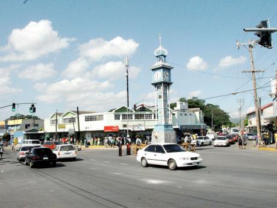

old Harbour jamaica
 Harbour has one of the highest and fastest growth
rates in Jamaica and is projected to remain so in the
future. The population increased from 17,966 in 1991
to 29,835 in 2005. The population of Old Harbour iss
growing steadily and spilling over into Old Harbour
Bay. (Source: Planning Institute of Jamaica, 2009). Data gathered shows that approximately 66.9 per cent of
the residents of Old Harbour were born in St. Catherine.
Migration is quite uncommon in the community, as
88.6 per cent have lived in the community for 10 or
more years. St. Catherine, which lies west of St. Andrews and south
of St. Mary and St. Ann, is the largest parish on the
island with an area of 1,260 km², and a population
of 383,317 (2001 Population Census). A four-lane
highway connects Spanish Town with Kingston, the
nation’s capital. On the southern road from Spanish
Town is the town of Old Harbour which has a
population of 17,883. On the coast, five kilometres
from Old Harbour is Old Harbour Bay, the largest
fishing village in Jamaica. It has a fine harbour with one
of the best deep-water piers on the island. The main
generating power plant of the Jamaica Public Service is
in Old Harbour Bay. The plains of St. Catherine, which provide numerous
grazing pens, are largely used up for sugar and rice
cultivation. The Rio Cobre Canal irrigates about
7,200 hectares of the St. Catherine Plains. The Bodles
Agricultural Station lies between Old Harbour and
May Pen. The Soya Bean Processing Plant is between
Old Harbour and May Pen. (Source: Geography and
History of Jamaica. Published by The Jamaica Gleaner).
With the agricultural collapse in the agricultural sector,
there is evidence of a strong rural – urban migration.
The planning and land management authorities in the
urban centres will have to cope with this population
influx by improving the provision of services such as
housing, education and health services